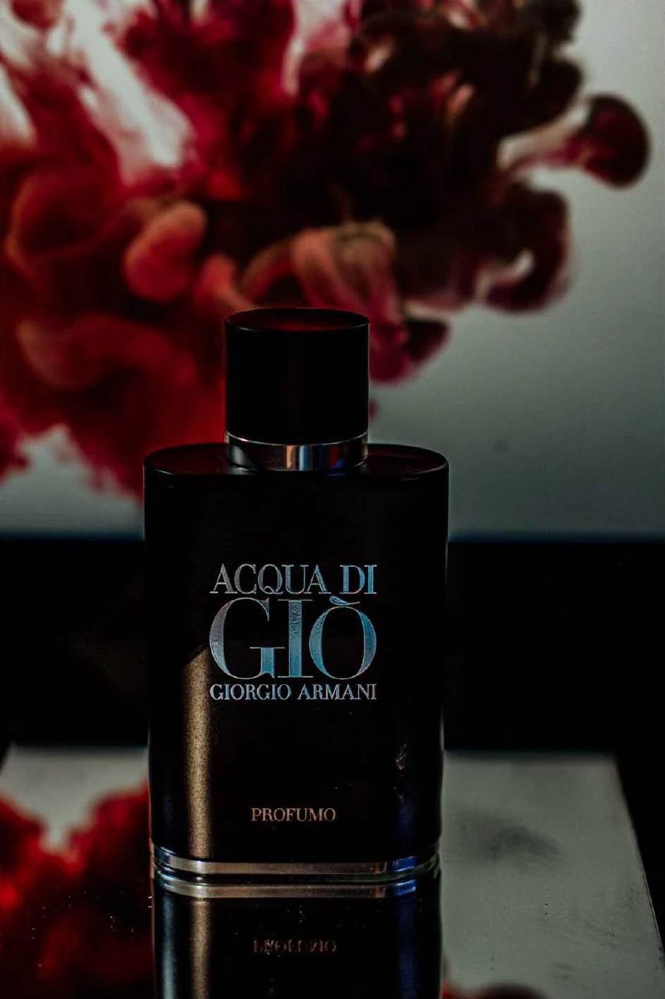
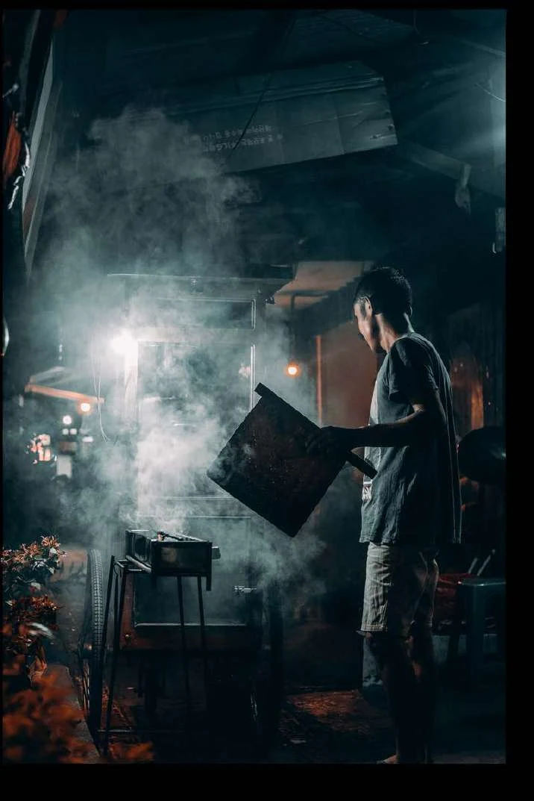
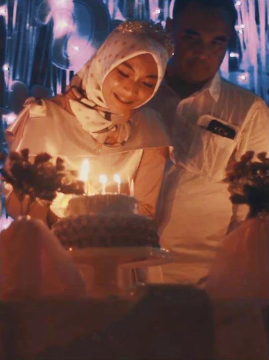
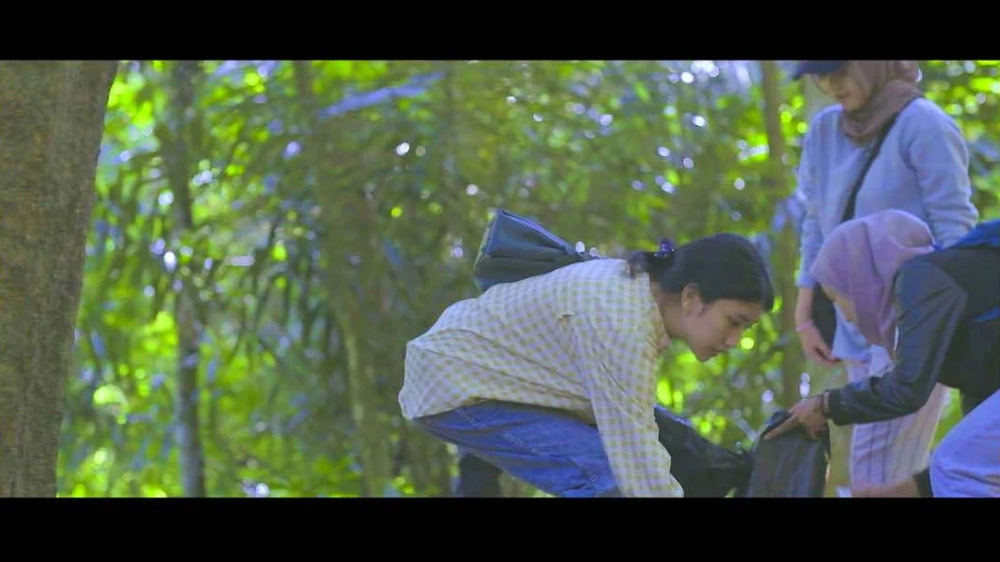
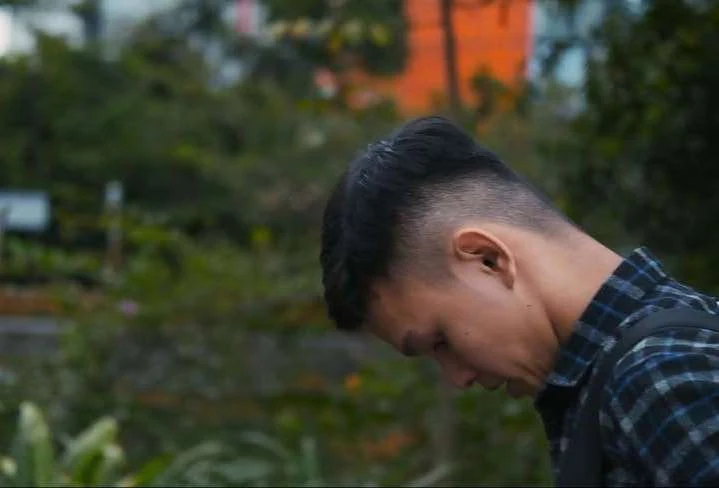
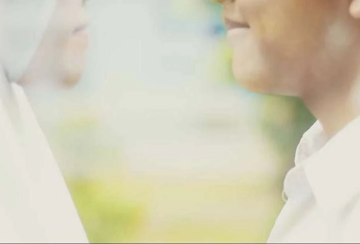
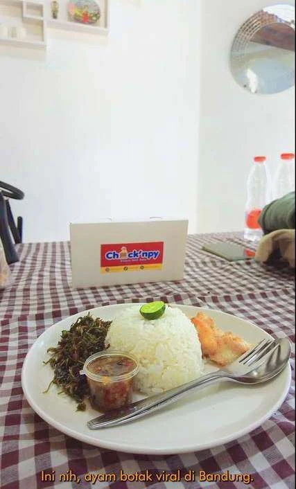

Photography & videography / Since 2018
Some stories
start with
a frame.
Before campaign reports and content calendars, there was a camera. Products, people and moments worth paying attention to—selected from my visual production portfolio.


01 / Selected photographs
A closer look.
Choose a category or open any photograph. Use the arrows to move through the collection.
02 / Selected films
Stories in motion.
Celebrations, short films and brand work. A selection from the videography portfolio.

Sweet Seventeen

Recalling Our Gen Z to the Nature

SADAR

NANTI

Chick’npy
Films open in Google Drive. For commercial CPAS examples produced from my creative briefs, visit Performance Marketing.
The production side
From a brief
to the final cut.
I work through briefing, shooting, editing and revisions. That hands-on production experience now sits alongside my marketing work, helping me explain visual ideas and collaborate with creative teams.
Product photographyEvents & portraitsVideo productionLightroom & PhotoshopPremiere Pro & CapCut